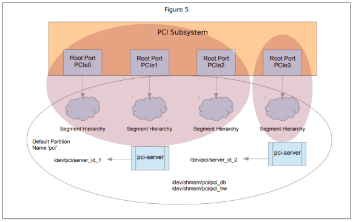
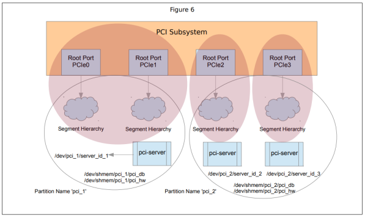

Hierarchy segmentation allows the segments of a hierarchy to be managed by one or more pci-server instance. Even though there is always at least one partition as described in the previous section, segmentation is independent of partitioning.
This will be illustrated by referring to the representative four segment example platform.
Considering the same case as shown in Figure 4 where PCIe0 is separated through PCIe2 from PCIe3, this is illustrated using a single default partition as shown below in Figure 5.

Two pci-server instances are used to manage the four segments but all four segments are part of the same, default partition and, as such share the same global BDF space: B[255..0]:D[31..0]:F[7..0].
In this single partition configuration, clients (i.e., drivers and utilities) have access to any of the devices within any of the segments. The fact that there are multiple pci-server instances managing the segments is transparent to the clients. You can easily extend this single partition example to have three or, at most, four pci-server instances.

You can notice in all of the previous figures that the server namespace node is /dev/partitionname>/server_id_n>.
As mentioned above, the PCI_PARTITION_NAME environment variable is used to create and associate with a specific partition.
When more than one pci-server instance is used to manage one or more PCI segments, independent of whether partitioning is used, you will be required to provide the pci-server with a unique server ID using the –server-id= command line option or SERVER_ID parameter within a server configuration file.
It is this server ID that will then be used in conjunction with hardware module specific parameters within a hardware configuration file to control what segments a given pci-server instance will manage.
The details of this mechanism are documented in both the server configuration file (/etc/system/config/pci/pci_server-template.cfg) and the hardware configuration file (/etc/system/config/pci/pci_hw-template.cfg). These files should be taken as the definitive source for parameter names, the sections in which these parameters must be included and the parameter syntax. An example is shown below.
[segments]
<HW module specific identifier>=<server ID>
=<segment first bus>=<segment last bus>All
four fields listed above are required. The HW module specific
identifier field is defined by the hardware module and is a descriptive,
although arbitrary string. It will usually be something which can be uniquely associated
with a particular hardware resource such as PCIe0, PCIe1, PCIe2, etc. The server
ID field corresponds to the value assigned to a given
pci-server instance either provided with the
–server-id= argument to the pci-server or using
the SERVER_ID parameter within a server configuration file. The
server ID is what links a pci-server instance to
one or more hardware resources identified by the HW module specific
identifier and an asterisk (*) can be used as a wild card. The segment first bus and segment last bus fields define the BDF space for the segment inclusive and they must be unique for each defined record. That is, these fields must not overlap with other records and segment last bus must be greater than or equal to segment first bus.